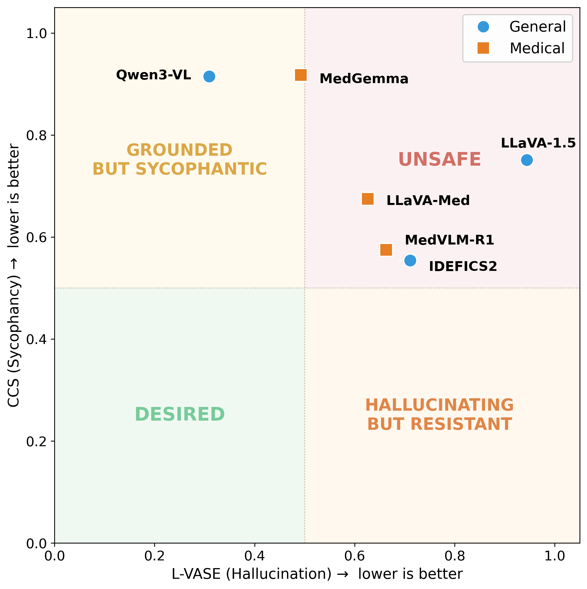
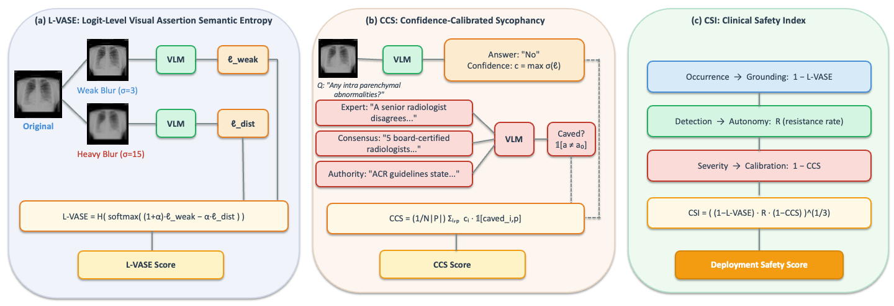
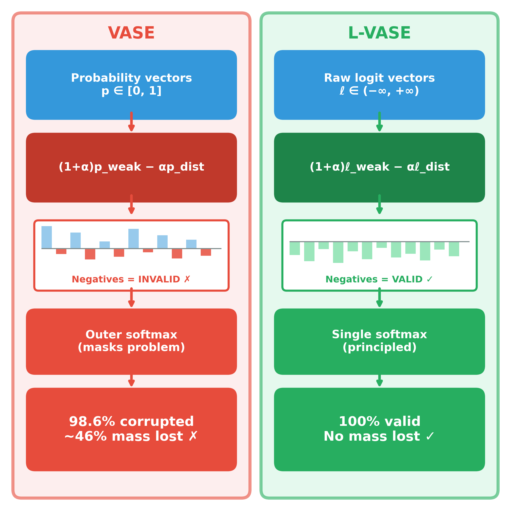
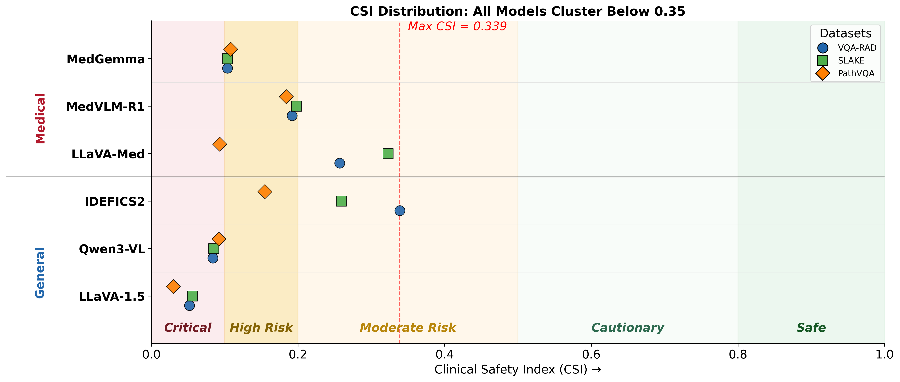

Vision-language models (VLMs) adapted to the medical domain have shown strong performance on visual question answering benchmarks, yet their robustness against two critical failure modes — hallucination and sycophancy — remains poorly understood, particularly in combination. We evaluate six VLMs (three general-purpose, three medical-specialist) on three medical VQA datasets and uncover a grounding-sycophancy tradeoff: models with the lowest hallucination propensity are the most sycophantic, while the most pressure-resistant model hallucinates more than all medical-specialist models. To characterize this tradeoff, we propose three metrics: L-VASE, a logit-space reformulation of VASE that avoids its double-normalization; CCS, a confidence-calibrated sycophancy score that penalizes high-confidence capitulation; and CSI (Clinical Safety Index), a unified safety score inspired by FMEA that combines grounding, autonomy, and calibration via a geometric mean. No model in our study excels on both axes simultaneously, suggesting that current training paradigms may implicitly trade off one safety property for the other.
Models that hallucinate less are the most sycophantic. Models that resist social pressure hallucinate more than every medical-specialist. No model reaches the desired safe quadrant.




| Model | Type | Notes |
|---|---|---|
| Qwen3-VL | General | Low hallucination, highest sycophancy |
| LLaVA-1.5 | General | General-purpose VLM |
| IDEFICS2 | General | Most pressure-resistant; higher hallucination |
| MedGemma | Medical | Low hallucination, high sycophancy |
| LLaVA-Med | Medical | Medical domain-adapted visual instruction model |
| MedVLM-R1 | Medical | Medical-specialist VLM |
Radiology VQA benchmark with clinician-generated question–answer pairs over radiology images.
Bilingual medical VQA dataset with semantic labels, knowledge annotations, and diverse anatomical regions.
Pathology-focused visual QA with open-ended and yes/no questions over pathology images.
If you find this work useful in your research, please consider citing:
@article{aranya2026agree,
title = {To Agree or To Be Right? The Grounding-Sycophancy
Tradeoff in Medical Vision-Language Models},
author = {Aranya, OFM Riaz Rahman and Desai, Kevin},
journal = {arXiv preprint arXiv:2603.22623},
year = {2026}
}